HTTP（超文本传输协议，HyperText Transfer Protocol）是一种用于分布式、协作式、超媒体信息系统的应用层协议。
HTTP 是万维网（WWW）的数据通信的基础，设计目的是确保客户端与服务器之间的通信，是互联网上最常用的协议之一。
HTTP 是一个基于 TCP/IP 通信协议来传递数据的（HTML 文件、图片文件、查询结果等）。
设计 HTTP 最初的目的是为了提供一种发布和接收 HTML 页面的方法，通过 HTTP 或者 HTTPS 协议请求的资源由统一资源标识符（Uniform Resource Identifiers，URI）来标识。
HTTP 的基本工作原理是客户端（通常是 web 浏览器）向服务器发送请求，服务器接收到请求后，返回相应的资源。这些资源可以是网页、图像、音频文件、视频等。
HTTP 使用了客户端-服务器模型，其中客户端发送请求，服务器返回响应。
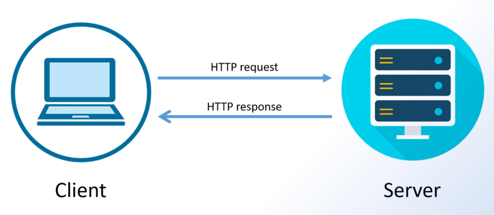
HTTP 的请求-响应模型通常由以下几个步骤组成：
建立连接：客户端与服务器之间建立连接。在传统的 HTTP 中，这是基于 TCP/IP 协议的。最近的 HTTP/2 和 HTTP/3 则使用了更先进的传输层协议，例如基于 TCP 的二进制协议（HTTP/2）或基于 UDP 的 QUIC 协议（HTTP/3）。
发送请求：客户端向服务器发送请求，请求中包含要访问的资源的 URL、请求方法（GET、POST、PUT、DELETE 等）、请求头（例如，Accept、User-Agent）以及可选的请求体（对于 POST 或 PUT 请求）。
处理请求：服务器接收到请求后，根据请求中的信息找到相应的资源，执行相应的处理操作。这可能涉及从数据库中检索数据、生成动态内容或者简单地返回静态文件。
发送响应：服务器将处理后的结果封装在响应中，并将其发送回客户端。响应包含状态码（用于指示请求的成功或失败）、响应头（例如，Content-Type、Content-Length）以及可选的响应体（例如，HTML 页面、图像数据）。
关闭连接：在完成请求-响应周期后，客户端和服务器之间的连接可以被关闭，除非使用了持久连接（如 HTTP/1.1 中的 keep-alive）。
HTTP 方法指定了客户端可以对服务器上的资源执行哪些动作。
主要的HTTP方法有：
HTTP状态码是服务器对客户端请求的响应。
状态码分为五类：
HTTP 有多个版本，目前广泛使用的是 HTTP/1.1 和 HTTP/2，以及正在逐步推广的 HTTP/3。
HTTP 本身是不安全的，因为传输的数据未经加密，可能会被窃听或篡改。为了解决这个问题，引入了 HTTPS（下一章节会详细说明），即在 HTTP 上加入 SSL/TLS 协议，为数据传输提供了加密和身份验证。
HTTP（超文本传输协议，Hypertext Transfer Protocol）是一种用于从网络传输超文本到本地浏览器的传输协议。它定义了客户端与服务器之间请求和响应的格式。HTTP 工作在 TCP/IP 模型之上，通常使用端口 80。
HTTPS（超文本传输安全协议，Hypertext Transfer Protocol Secure）是 HTTP 的安全版本，它在 HTTP 下增加了 SSL/TLS 协议，提供了数据加密、完整性校验和身份验证。HTTPS 通常使用端口 443。
HTTP 协议是 Hyper Text Transfer Protocol（超文本传输协议）的缩写，是用于从万维网（ WWW:World Wide Web ）服务器传输超文本到本地浏览器的传送协议。
HTTP 是一个基于 TCP/IP 通信协议来传递数据（HTML 文件、图片文件、查询结果等）。
HTTPS 协议是 HyperText Transfer Protocol Secure（超文本传输安全协议）的缩写，是一种通过计算机网络进行安全通信的传输协议。
HTTP 本身是不安全的，因为传输的数据未经加密，可能会被窃听或篡改，为了解决这个问题，引入了 HTTPS，即在 HTTP 上加入 SSL/TLS 协议，为数据传输提供了加密和身份验证。
HTTPS 经由 HTTP 进行通信，但利用 SSL/TLS 来加密数据包，HTTPS 开发的主要目的，是提供对网站服务器的身份认证，保护交换资料的隐私与完整性。
HTTP 的 URL 是由 http:// 起始与默认使用端口 80，而 HTTPS 的 URL 则是由 https:// 起始与默认使用端口443。
HTTP 协议工作于客户端-服务端架构上。
HTTP 工作过程通常如下：Web 服务器有：Nginx 服务器，Apache 服务器，IIS 服务器（Internet Information Services）等。
HTTP 默认端口号为 80，但是你也可以改为 8080 或者其他端口。
HTTP 三点注意事项：
HTTP 是无连接：无连接的含义是限制每次连接只处理一个请求，服务器处理完客户的请求，并收到客户的应答后，即断开连接，采用这种方式可以节省传输时间。
HTTP 是媒体独立的：这意味着，只要客户端和服务器知道如何处理的数据内容，任何类型的数据都可以通过HTTP发送，客户端以及服务器指定使用适合的 MIME-type 内容类型。
HTTP 是无状态：HTTP 协议是无状态协议，无状态是指协议对于事务处理没有记忆能力，缺少状态意味着如果后续处理需要前面的信息，则它必须重传，这样可能导致每次连接传送的数据量增大，另一方面，在服务器不需要先前信息时它的应答就较快。
以下图表展示了 HTTP 协议通信流程：
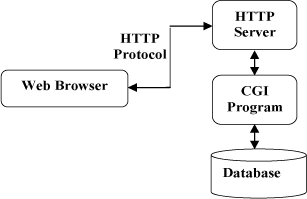
HTTPS 的主要作用是在不安全的网络上创建一个安全信道，并可在使用适当的加密包和服务器证书可被验证且可被信任时，对窃听和中间人攻击提供合理的防护。
HTTPS 的信任基于预先安装在操作系统中的证书颁发机构（CA）。
因此，与一个网站之间的 HTTPS 连线仅在这些情况下可被信任：
Google Chrome、Internet Explorer 和 Firefox 等浏览器在网站含有由加密和未加密内容组成的混合内容时，会发出警告。
HTTP 链接显示不安全：
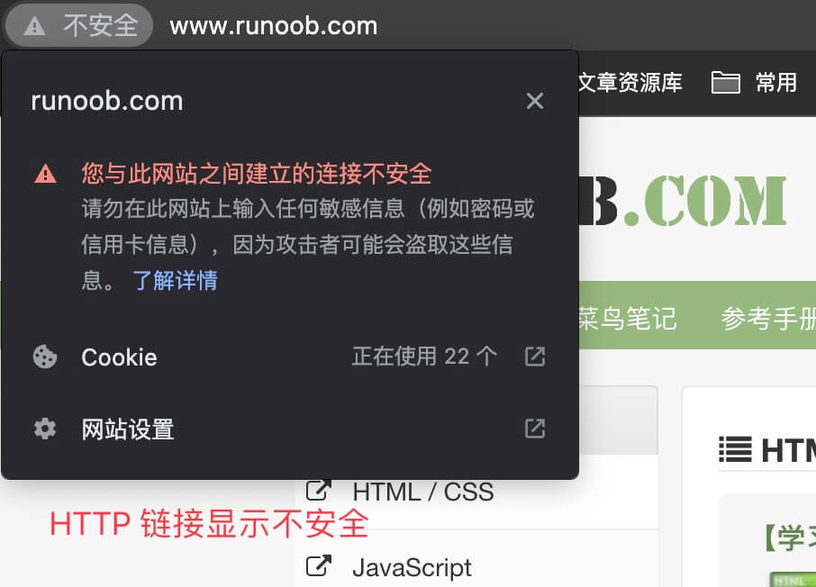
HTTPS 链接显示为安全：
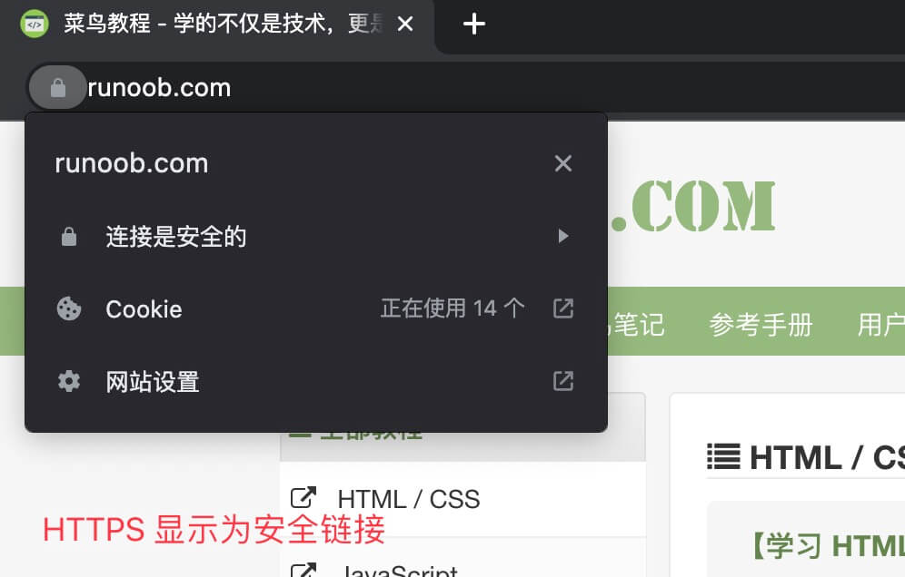
虽然 HTTP 和 HTTPS 在名称上非常相似，但它们在安全性上有本质的区别：HTTPS通过使用SSL/TLS协议，为数据传输提供了加密和完整性校验，从而保护了用户的隐私和数据安全。随着网络安全意识的提高，越来越多的网站开始使用HTTPS来保护用户数据。
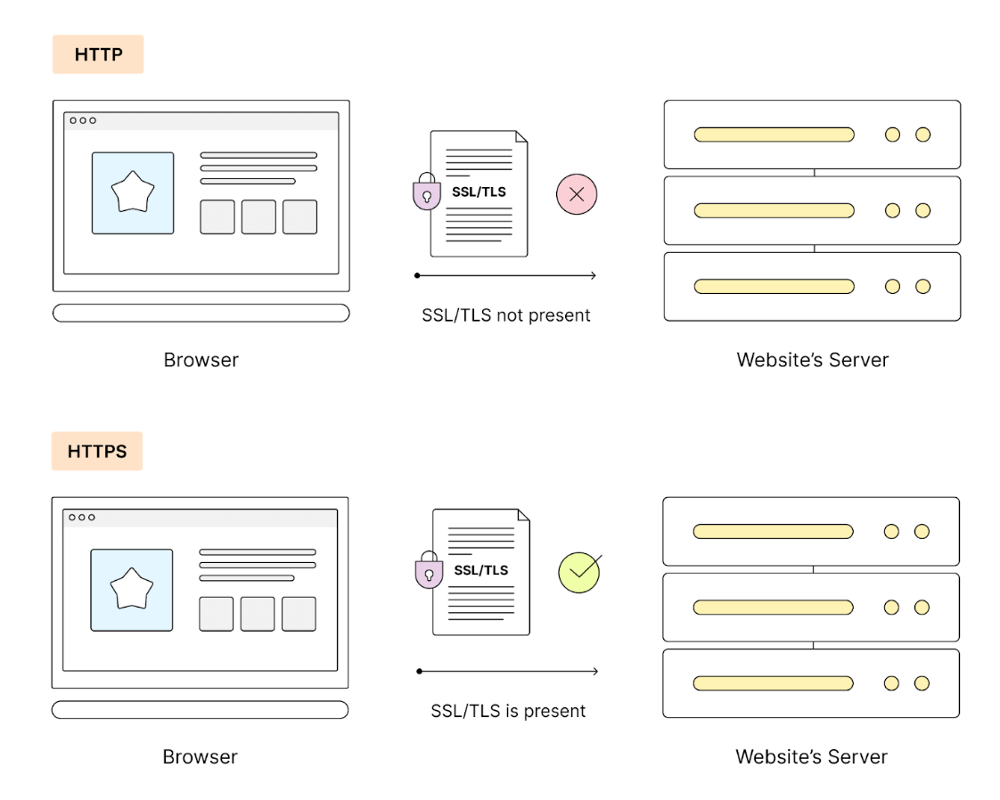
同时，主流的浏览器和搜索引擎也在鼓励网站使用 HTTPS。
因此，对于涉及敏感信息传输的网站，建议使用 HTTPS 来提高安全性。
主要区别如下：
加密：
端口：
安全性：
证书：
性能：
搜索引擎优化(SEO)：
浏览器显示：
成本：
应用场景：
HTTP 是基于客户端/服务端（C/S）的架构模型，通过一个可靠的链接来交换信息，是一个无状态的请求/响应协议。
HTTP 消息是客户端和服务器之间通信的基础，它们由一系列的文本行组成，遵循特定的格式和结构。
HTTP消息分为两种类型：请求消息和响应消息。
一个 HTTP 客户端是一个应用程序（Web 浏览器或其他任何客户端），通过连接到服务器达到向服务器发送一个或多个 HTTP 的请求的目的。
一个 HTTP 服务器 同样也是一个应用程序（通常是一个 Web 服务，如 Nginx、Apache 服务器或 IIS 服务器等），通过接收客户端的请求并向客户端发送 HTTP 响应数据。
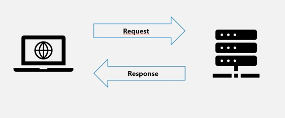
客户端发送一个HTTP请求到服务器的请求消息包括以下格式：请求行（request line）、请求头部（header）、空行和请求数据四个部分组成，下图给出了请求报文的一般格式。
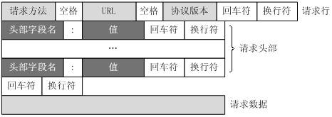
请求行（Request Line）：
请求行的格式示例：GET /index.html HTTP/1.1
请求头（Request Headers）：
Host、User-Agent、Accept、Accept-Encoding、Content-Length等。空行：
请求体（可选）：
HTTP 响应也由四个部分组成，分别是：状态行、消息报头、空行和响应正文。
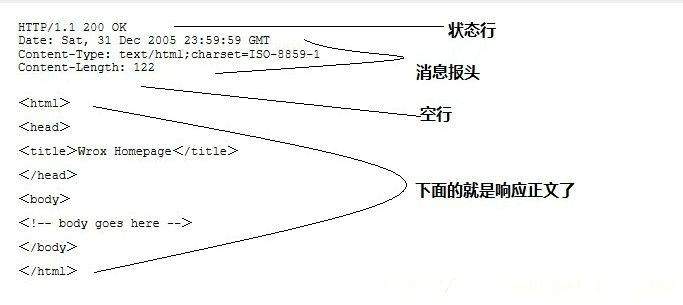
状态行（Status Line）：
状态行的格式示例：HTTP/1.1 200 OK
响应头（Response Headers）：
Content-Type、Content-Length、Server、Set-Cookie等。空行：
响应体（可选）：
下面实例是一点典型的使用 GET 来传递数据的实例：
客户端请求：
GET /index.html HTTP/1.1 Host: www.example.com User-Agent: Mozilla/5.0 (Windows NT 10.0; Win64; x64; rv:91.0) Gecko/20100101 Firefox/91.0 Accept: text/html,application/xhtml+xml,application/xml;q=0.9,image/webp,*/*;q=0.8 Accept-Encoding: gzip, deflate Connection: keep-alive
服务端响应:
HTTP/1.1 200 OK
Date: Wed, 18 Apr 2024 12:00:00 GMT
Server: Apache/2.4.1 (Unix)
Last-Modified: Wed, 18 Apr 2024 11:00:00 GMT
Content-Length: 12345
Content-Type: text/html; charset=UTF-8
<!DOCTYPE html>
<html>
<head>
<title>Example Page</title>
</head>
<body>
<h1>Hello, World!</h1>
<!-- The rest of the HTML content -->
</body>
</html>
在实际应用中，HTTP 消息可以包含更多的头字段，并且请求体和响应体的大小会根据传输的数据而变化。
HTTP 请求方法定义了客户端和服务器之间的通信方式。
根据 HTTP 标准，HTTP 请求可以使用多种请求方法。
以下是常见的 HTTP 请求方法列表：
| 序号 | 方法 | 描述 |
|---|---|---|
| 1 | GET | 从服务器获取资源。用于请求数据而不对数据进行更改。例如，从服务器获取网页、图片等。 |
| 2 | POST | 向服务器发送数据以创建新资源。常用于提交表单数据或上传文件。发送的数据包含在请求体中。 |
| 3 | PUT | 向服务器发送数据以更新现有资源。如果资源不存在，则创建新的资源。与 POST 不同，PUT 通常是幂等的，即多次执行相同的 PUT 请求不会产生不同的结果。 |
| 4 | DELETE | 从服务器删除指定的资源。请求中包含要删除的资源标识符。 |
| 5 | PATCH | 对资源进行部分修改。与 PUT 类似，但 PATCH 只更改部分数据而不是替换整个资源。 |
| 6 | HEAD | 类似于 GET，但服务器只返回响应的头部，不返回实际数据。用于检查资源的元数据（例如，检查资源是否存在，查看响应的头部信息）。 |
| 7 | OPTIONS | 返回服务器支持的 HTTP 方法。用于检查服务器支持哪些请求方法，通常用于跨域资源共享（CORS）的预检请求。 |
| 8 | TRACE | 回显服务器收到的请求，主要用于诊断。客户端可以查看请求在服务器中的处理路径。 |
| 9 | CONNECT | 建立一个到服务器的隧道，通常用于 HTTPS 连接。客户端可以通过该隧道发送加密的数据。 |
HTTP/1.0 定义了以下三种请求方法：
HTTP/1.1 引入了更多的方法：
HTTP/2 基本上沿用了 HTTP/1.1 的方法，但对协议进行了优化，提高了传输效率和速度。HTTP/2 也引入了新的特性，如多路复用、头部压缩和服务器推送等。
HTTP/3 基于 QUIC 协议实现，继续使用 HTTP/2 的方法。HTTP/3 主要改进了传输层，使用 UDP 代替 TCP 以提高传输速度和可靠性。
HTTP 响应头信息是服务器在响应客户端的HTTP请求时发送的一系列头字段，它们提供了关于响应的附加信息和服务器的指令。
以下是一些常见的 HTTP 响应头信息：
| 响应头信息（英文） | 响应头信息（中文） | 描述 |
|---|---|---|
| Date | 日期 | 响应生成的日期和时间。例如：Wed, 18 Apr 2024 12:00:00 GMT |
| Server | 服务器 | 服务器软件的名称和版本。例如：Apache/2.4.1 (Unix) |
| Content-Type | 内容类型 | 响应体的媒体类型（MIME类型），如text/html; charset=UTF-8, application/json等。 |
| Content-Length | 内容长度 | 响应体的大小，单位是字节。例如：3145 |
| Content-Encoding | 内容编码 | 响应体的压缩编码，如 gzip, deflate等。 |
| Content-Language | 内容语言 | 响应体的语言。例如：zh-CN |
| Content-Location | 内容位置 | 响应体的 URI。例如：/index.html |
| Content-Range | 内容范围 | 响应体的字节范围，用于分块传输。例如：bytes 0-999/8000 |
| Cache-Control | 缓存控制 | 控制响应的缓存行为, 如 no-cache 表示必须重新请求。 |
| Connection | 连接 | 管理连接的选项，如keep-alive或close，keep-alive 表示连接不会在传输后关闭。。 |
| Set-Cookie | 设置 Cookie | 设置客户端的 cookie。例如：sessionId=abc123; Path=/; Secure |
| Expires | 过期时间 | 响应体的过期日期和时间。例如：Thu, 18 Apr 2024 12:00:00 GMT |
| Last-Modified | 最后修改时间 | 资源最后被修改的日期和时间。例如：Wed, 18 Apr 2024 11:00:00 GMT |
| ETag | 实体标签 | 资源的特定版本的标识符。例如："33a64df551425fcc55e6" |
| Location | 位置 | 用于重定向的 URI。例如：/newresource |
| Pragma | 实现特定的指令 | 包含实现特定的指令，如 no-cache。 |
| WWW-Authenticate | 认证信息 | 认证信息，通常用于HTTP认证。例如：Basic realm="Access to the site" |
| Accept-Ranges | 接受范围 | 指定可接受的请求范围类型。例如：bytes |
| Age | 经过时间 | 响应生成后经过的秒数，从原始服务器生成到代理服务器。例如：24 |
| Allow | 允许方法 | 列出资源允许的 HTTP 方法 。例如：GET, POST，HEAD等 |
| Vary | 变化 | 告诉下游代理如何使用响应头信息来确定响应是否可以从缓存中获取。例如：Accept |
| Strict-Transport-Security | 严格传输安全 | 指示浏览器仅通过 HTTPS 与服务器通信。例如：max-age=31536000; includeSubDomains |
| X-Frame-Options | 框架选项 | 控制页面是否允许在框架中显示，防止点击劫持攻击。例如：SAMEORIGIN |
| X-Content-Type-Options | 内容类型选项 | 指示浏览器不要尝试猜测资源的 MIME 类型。例如：nosniff |
| X-XSS-Protection | XSS保护 | 控制浏览器的 XSS 过滤和阻断。例如：1; mode=block |
| Public-Key-Pins | 公钥固定 | HTTP 头信息，用于HTTP公共密钥固定（HPKP），一种安全机制，用于防止中间人攻击。例如：pin-sha256="base64+primarykey"; pin-sha256="base64+backupkey"; max-age=expireTime |
这些响应头信息在实际的 HTTP 响应中可能会有所不同，具体值取决于服务器的配置和处理逻辑。
当浏览者访问一个网页时，浏览者的浏览器会向网页所在服务器发出请求。当浏览器接收并显示网页前，此网页所在的服务器会返回一个包含 HTTP 状态码的信息头（server header）用以响应浏览器的请求。
HTTP 状态码的英文为 HTTP Status Code。
下面是常见的 HTTP 状态码：
HTTP 状态码由三个十进制数字组成，第一个十进制数字定义了状态码的类型。响应分为五类：信息响应(100–199)，成功响应(200–299)，重定向(300–399)，客户端错误(400–499)和服务器错误 (500–599)：
| 分类 | 分类描述 |
|---|---|
| 1** | 信息，服务器收到请求，需要请求者继续执行操作 |
| 2** | 成功，操作被成功接收并处理 |
| 3** | 重定向，需要进一步的操作以完成请求 |
| 4** | 客户端错误，请求包含语法错误或无法完成请求 |
| 5** | 服务器错误，服务器在处理请求的过程中发生了错误 |
HTTP状态码列表:
| 状态码 | 状态码英文名称 | 中文描述 |
|---|---|---|
| 100 | Continue | 继续。客户端应继续其请求 |
| 101 | Switching Protocols | 切换协议。服务器根据客户端的请求切换协议。只能切换到更高级的协议，例如，切换到HTTP的新版本协议 |
| 200 | OK | 请求成功。一般用于GET与POST请求 |
| 201 | Created | 已创建。成功请求并创建了新的资源 |
| 202 | Accepted | 已接受。已经接受请求，但未处理完成 |
| 203 | Non-Authoritative Information | 非授权信息。请求成功。但返回的meta信息不在原始的服务器，而是一个副本 |
| 204 | No Content | 无内容。服务器成功处理，但未返回内容。在未更新网页的情况下，可确保浏览器继续显示当前文档 |
| 205 | Reset Content | 重置内容。服务器处理成功，用户终端（例如：浏览器）应重置文档视图。可通过此返回码清除浏览器的表单域 |
| 206 | Partial Content | 部分内容。服务器成功处理了部分GET请求 |
| 300 | Multiple Choices | 多种选择。请求的资源可包括多个位置，相应可返回一个资源特征与地址的列表用于用户终端（例如：浏览器）选择 |
| 301 | Moved Permanently | 永久移动。请求的资源已被永久的移动到新URI，返回信息会包括新的URI，浏览器会自动定向到新URI。今后任何新的请求都应使用新的URI代替 |
| 302 | Found | 临时移动。与301类似。但资源只是临时被移动。客户端应继续使用原有URI |
| 303 | See Other | 查看其它地址。与301类似。使用GET和POST请求查看 |
| 304 | Not Modified | 未修改。所请求的资源未修改，服务器返回此状态码时，不会返回任何资源。客户端通常会缓存访问过的资源，通过提供一个头信息指出客户端希望只返回在指定日期之后修改的资源 |
| 305 | Use Proxy | 使用代理。所请求的资源必须通过代理访问 |
| 306 | Unused | 已经被废弃的HTTP状态码 |
| 307 | Temporary Redirect | 临时重定向。与302类似。使用GET请求重定向 |
| 400 | Bad Request | 客户端请求的语法错误，服务器无法理解 |
| 401 | Unauthorized | 请求要求用户的身份认证 |
| 402 | Payment Required | 保留，将来使用 |
| 403 | Forbidden | 服务器理解请求客户端的请求，但是拒绝执行此请求 |
| 404 | Not Found | 服务器无法根据客户端的请求找到资源（网页）。通过此代码，网站设计人员可设置"您所请求的资源无法找到"的个性页面 |
| 405 | Method Not Allowed | 客户端请求中的方法被禁止 |
| 406 | Not Acceptable | 服务器无法根据客户端请求的内容特性完成请求 |
| 407 | Proxy Authentication Required | 请求要求代理的身份认证，与401类似，但请求者应当使用代理进行授权 |
| 408 | Request Time-out | 服务器等待客户端发送的请求时间过长，超时 |
| 409 | Conflict | 服务器完成客户端的 PUT 请求时可能返回此代码，服务器处理请求时发生了冲突 |
| 410 | Gone | 客户端请求的资源已经不存在。410不同于404，如果资源以前有现在被永久删除了可使用410代码，网站设计人员可通过301代码指定资源的新位置 |
| 411 | Length Required | 服务器无法处理客户端发送的不带Content-Length的请求信息 |
| 412 | Precondition Failed | 客户端请求信息的先决条件错误 |
| 413 | Request Entity Too Large | 由于请求的实体过大，服务器无法处理，因此拒绝请求。为防止客户端的连续请求，服务器可能会关闭连接。如果只是服务器暂时无法处理，则会包含一个Retry-After的响应信息 |
| 414 | Request-URI Too Large | 请求的URI过长（URI通常为网址），服务器无法处理 |
| 415 | Unsupported Media Type | 服务器无法处理请求附带的媒体格式 |
| 416 | Requested range not satisfiable | 客户端请求的范围无效 |
| 417 | Expectation Failed（预期失败） | 服务器无法满足请求头中 Expect 字段指定的预期行为。 |
| 418 | I'm a teapot | 状态码 418 实际上是一个愚人节玩笑。它在 RFC 2324 中定义，该 RFC 是一个关于超文本咖啡壶控制协议（HTCPCP）的笑话文件。在这个笑话中，418 状态码是作为一个玩笑加入到 HTTP 协议中的。 |
| 500 | Internal Server Error | 服务器内部错误，无法完成请求 |
| 501 | Not Implemented | 服务器不支持请求的功能，无法完成请求 |
| 502 | Bad Gateway | 作为网关或者代理工作的服务器尝试执行请求时，从远程服务器接收到了一个无效的响应 |
| 503 | Service Unavailable | 由于超载或系统维护，服务器暂时的无法处理客户端的请求。延时的长度可包含在服务器的Retry-After头信息中 |
| 504 | Gateway Time-out | 充当网关或代理的服务器，未及时从远端服务器获取请求 |
| 505 | HTTP Version not supported | 服务器不支持请求的HTTP协议的版本，无法完成处理 |
Content-Type（内容类型），一般是指网页中存在的 Content-Type，用于定义网络文件的类型和网页的编码，决定浏览器将以什么形式、什么编码读取这个文件，这就是经常看到一些 PHP 网页点击的结果却是下载一个文件或一张图片的原因。
Content-Type 标头告诉客户端实际返回的内容的内容类型。
语法格式：
Content-Type: text/html; charset=utf-8 Content-Type: multipart/form-data; boundary=something
实例：
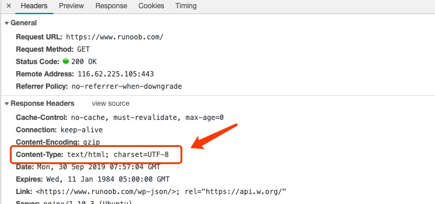
常见的媒体格式类型如下：
以application开头的媒体格式类型：
另外一种常见的媒体格式是上传文件之时使用的：
| 文件扩展名 | Content-Type(Mime-Type) | 文件扩展名 | Content-Type(Mime-Type) |
|---|---|---|---|
| .*（ 二进制流，不知道下载文件类型） | application/octet-stream | .tif | image/tiff |
| .001 | application/x-001 | .301 | application/x-301 |
| .323 | text/h323 | .906 | application/x-906 |
| .907 | drawing/907 | .a11 | application/x-a11 |
| .acp | audio/x-mei-aac | .ai | application/postscript |
| .aif | audio/aiff | .aifc | audio/aiff |
| .aiff | audio/aiff | .anv | application/x-anv |
| .asa | text/asa | .asf | video/x-ms-asf |
| .asp | text/asp | .asx | video/x-ms-asf |
| .au | audio/basic | .avi | video/avi |
| .awf | application/vnd.adobe.workflow | .biz | text/xml |
| .bmp | application/x-bmp | .bot | application/x-bot |
| .c4t | application/x-c4t | .c90 | application/x-c90 |
| .cal | application/x-cals | .cat | application/vnd.ms-pki.seccat |
| .cdf | application/x-netcdf | .cdr | application/x-cdr |
| .cel | application/x-cel | .cer | application/x-x509-ca-cert |
| .cg4 | application/x-g4 | .cgm | application/x-cgm |
| .cit | application/x-cit | .class | java/* |
| .cml | text/xml | .cmp | application/x-cmp |
| .cmx | application/x-cmx | .cot | application/x-cot |
| .crl | application/pkix-crl | .crt | application/x-x509-ca-cert |
| .csi | application/x-csi | .css | text/css |
| .cut | application/x-cut | .dbf | application/x-dbf |
| .dbm | application/x-dbm | .dbx | application/x-dbx |
| .dcd | text/xml | .dcx | application/x-dcx |
| .der | application/x-x509-ca-cert | .dgn | application/x-dgn |
| .dib | application/x-dib | .dll | application/x-msdownload |
| .doc | application/msword | .dot | application/msword |
| .drw | application/x-drw | .dtd | text/xml |
| .dwf | Model/vnd.dwf | .dwf | application/x-dwf |
| .dwg | application/x-dwg | .dxb | application/x-dxb |
| .dxf | application/x-dxf | .edn | application/vnd.adobe.edn |
| .emf | application/x-emf | .eml | message/rfc822 |
| .ent | text/xml | .epi | application/x-epi |
| .eps | application/x-ps | .eps | application/postscript |
| .etd | application/x-ebx | .exe | application/x-msdownload |
| .fax | image/fax | .fdf | application/vnd.fdf |
| .fif | application/fractals | .fo | text/xml |
| .frm | application/x-frm | .g4 | application/x-g4 |
| .gbr | application/x-gbr | . | application/x- |
| .gif | image/gif | .gl2 | application/x-gl2 |
| .gp4 | application/x-gp4 | .hgl | application/x-hgl |
| .hmr | application/x-hmr | .hpg | application/x-hpgl |
| .hpl | application/x-hpl | .hqx | application/mac-binhex40 |
| .hrf | application/x-hrf | .hta | application/hta |
| .htc | text/x-component | .htm | text/html |
| .html | text/html | .htt | text/webviewhtml |
| .htx | text/html | .icb | application/x-icb |
| .ico | image/x-icon | .ico | application/x-ico |
| .iff | application/x-iff | .ig4 | application/x-g4 |
| .igs | application/x-igs | .iii | application/x-iphone |
| .img | application/x-img | .ins | application/x-internet-signup |
| .isp | application/x-internet-signup | .IVF | video/x-ivf |
| .java | java/* | .jfif | image/jpeg |
| .jpe | image/jpeg | .jpe | application/x-jpe |
| .jpeg | image/jpeg | .jpg | image/jpeg |
| .jpg | application/x-jpg | .js | application/x-javascript |
| .jsp | text/html | .la1 | audio/x-liquid-file |
| .lar | application/x-laplayer-reg | .latex | application/x-latex |
| .lavs | audio/x-liquid-secure | .lbm | application/x-lbm |
| .lmsff | audio/x-la-lms | .ls | application/x-javascript |
| .ltr | application/x-ltr | .m1v | video/x-mpeg |
| .m2v | video/x-mpeg | .m3u | audio/mpegurl |
| .m4e | video/mpeg4 | .mac | application/x-mac |
| .man | application/x-troff-man | .math | text/xml |
| .mdb | application/msaccess | .mdb | application/x-mdb |
| .mfp | application/x-shockwave-flash | .mht | message/rfc822 |
| .mhtml | message/rfc822 | .mi | application/x-mi |
| .mid | audio/mid | .midi | audio/mid |
| .mil | application/x-mil | .mml | text/xml |
| .mnd | audio/x-musicnet-download | .mns | audio/x-musicnet-stream |
| .mocha | application/x-javascript | .movie | video/x-sgi-movie |
| .mp1 | audio/mp1 | .mp2 | audio/mp2 |
| .mp2v | video/mpeg | .mp3 | audio/mp3 |
| .mp4 | video/mpeg4 | .mpa | video/x-mpg |
| .mpd | application/vnd.ms-project | .mpe | video/x-mpeg |
| .mpeg | video/mpg | .mpg | video/mpg |
| .mpga | audio/rn-mpeg | .mpp | application/vnd.ms-project |
| .mps | video/x-mpeg | .mpt | application/vnd.ms-project |
| .mpv | video/mpg | .mpv2 | video/mpeg |
| .mpw | application/vnd.ms-project | .mpx | application/vnd.ms-project |
| .mtx | text/xml | .mxp | application/x-mmxp |
| .net | image/pnetvue | .nrf | application/x-nrf |
| .nws | message/rfc822 | .odc | text/x-ms-odc |
| .out | application/x-out | .p10 | application/pkcs10 |
| .p12 | application/x-pkcs12 | .p7b | application/x-pkcs7-certificates |
| .p7c | application/pkcs7-mime | .p7m | application/pkcs7-mime |
| .p7r | application/x-pkcs7-certreqresp | .p7s | application/pkcs7-signature |
| .pc5 | application/x-pc5 | .pci | application/x-pci |
| .pcl | application/x-pcl | .pcx | application/x-pcx |
| application/pdf | application/pdf | ||
| .pdx | application/vnd.adobe.pdx | .pfx | application/x-pkcs12 |
| .pgl | application/x-pgl | .pic | application/x-pic |
| .pko | application/vnd.ms-pki.pko | .pl | application/x-perl |
| .plg | text/html | .pls | audio/scpls |
| .plt | application/x-plt | .png | image/png |
| .png | application/x-png | .pot | application/vnd.ms-powerpoint |
| .ppa | application/vnd.ms-powerpoint | .ppm | application/x-ppm |
| .pps | application/vnd.ms-powerpoint | .ppt | application/vnd.ms-powerpoint |
| .ppt | application/x-ppt | .pr | application/x-pr |
| .prf | application/pics-rules | .prn | application/x-prn |
| .prt | application/x-prt | .ps | application/x-ps |
| .ps | application/postscript | .ptn | application/x-ptn |
| .pwz | application/vnd.ms-powerpoint | .r3t | text/vnd.rn-realtext3d |
| .ra | audio/vnd.rn-realaudio | .ram | audio/x-pn-realaudio |
| .ras | application/x-ras | .rat | application/rat-file |
| .rdf | text/xml | .rec | application/vnd.rn-recording |
| .red | application/x-red | .rgb | application/x-rgb |
| .rjs | application/vnd.rn-realsystem-rjs | .rjt | application/vnd.rn-realsystem-rjt |
| .rlc | application/x-rlc | .rle | application/x-rle |
| .rm | application/vnd.rn-realmedia | .rmf | application/vnd.adobe.rmf |
| .rmi | audio/mid | .rmj | application/vnd.rn-realsystem-rmj |
| .rmm | audio/x-pn-realaudio | .rmp | application/vnd.rn-rn_music_package |
| .rms | application/vnd.rn-realmedia-secure | .rmvb | application/vnd.rn-realmedia-vbr |
| .rmx | application/vnd.rn-realsystem-rmx | .rnx | application/vnd.rn-realplayer |
| .rp | image/vnd.rn-realpix | .rpm | audio/x-pn-realaudio-plugin |
| .rsml | application/vnd.rn-rsml | .rt | text/vnd.rn-realtext |
| .rtf | application/msword | .rtf | application/x-rtf |
| .rv | video/vnd.rn-realvideo | .sam | application/x-sam |
| .sat | application/x-sat | .sdp | application/sdp |
| .sdw | application/x-sdw | .sit | application/x-stuffit |
| .slb | application/x-slb | .sld | application/x-sld |
| .slk | drawing/x-slk | .smi | application/smil |
| .smil | application/smil | .smk | application/x-smk |
| .snd | audio/basic | .sol | text/plain |
| .sor | text/plain | .spc | application/x-pkcs7-certificates |
| .spl | application/futuresplash | .spp | text/xml |
| .ssm | application/streamingmedia | .sst | application/vnd.ms-pki.certstore |
| .stl | application/vnd.ms-pki.stl | .stm | text/html |
| .sty | application/x-sty | .svg | text/xml |
| .swf | application/x-shockwave-flash | .tdf | application/x-tdf |
| .tg4 | application/x-tg4 | .tga | application/x-tga |
| .tif | image/tiff | .tif | application/x-tif |
| .tiff | image/tiff | .tld | text/xml |
| .top | drawing/x-top | .torrent | application/x-bittorrent |
| .tsd | text/xml | .txt | text/plain |
| .uin | application/x-icq | .uls | text/iuls |
| .vcf | text/x-vcard | .vda | application/x-vda |
| .vdx | application/vnd.visio | .vml | text/xml |
| .vpg | application/x-vpeg005 | .vsd | application/vnd.visio |
| .vsd | application/x-vsd | .vss | application/vnd.visio |
| .vst | application/vnd.visio | .vst | application/x-vst |
| .vsw | application/vnd.visio | .vsx | application/vnd.visio |
| .vtx | application/vnd.visio | .vxml | text/xml |
| .wav | audio/wav | .wax | audio/x-ms-wax |
| .wb1 | application/x-wb1 | .wb2 | application/x-wb2 |
| .wb3 | application/x-wb3 | .wbmp | image/vnd.wap.wbmp |
| .wiz | application/msword | .wk3 | application/x-wk3 |
| .wk4 | application/x-wk4 | .wkq | application/x-wkq |
| .wks | application/x-wks | .wm | video/x-ms-wm |
| .wma | audio/x-ms-wma | .wmd | application/x-ms-wmd |
| .wmf | application/x-wmf | .wml | text/vnd.wap.wml |
| .wmv | video/x-ms-wmv | .wmx | video/x-ms-wmx |
| .wmz | application/x-ms-wmz | .wp6 | application/x-wp6 |
| .wpd | application/x-wpd | .wpg | application/x-wpg |
| .wpl | application/vnd.ms-wpl | .wq1 | application/x-wq1 |
| .wr1 | application/x-wr1 | .wri | application/x-wri |
| .wrk | application/x-wrk | .ws | application/x-ws |
| .ws2 | application/x-ws | .wsc | text/scriptlet |
| .wsdl | text/xml | .wvx | video/x-ms-wvx |
| .xdp | application/vnd.adobe.xdp | .xdr | text/xml |
| .xfd | application/vnd.adobe.xfd | .xfdf | application/vnd.adobe.xfdf |
| .xhtml | text/html | .xls | application/vnd.ms-excel |
| .xls | application/x-xls | .xlw | application/x-xlw |
| .xml | text/xml | .xpl | audio/scpls |
| .xq | text/xml | .xql | text/xml |
| .xquery | text/xml | .xsd | text/xml |
| .xsl | text/xml | .xslt | text/xml |
| .xwd | application/x-xwd | .x_b | application/x-x_b |
| .sis | application/vnd.symbian.install | .sisx | application/vnd.symbian.install |
| .x_t | application/x-x_t | .ipa | application/vnd.iphone |
| .apk | application/vnd.android.package-archive | .xap | application/x-silverlight-app |
MIME (Multipurpose Internet Mail Extensions) 是描述消息内容类型的标准，用来表示文档、文件或字节流的性质和格式。
MIME 消息能包含文本、图像、音频、视频以及其他应用程序专用的数据。
浏览器通常使用 MIME 类型（而不是文件扩展名）来确定如何处理URL，因此 We b服务器在响应头中添加正确的 MIME 类型非常重要。如果配置不正确，浏览器可能会无法解析文件内容，网站将无法正常工作，并且下载的文件也会被错误处理。
MIME 类型通用结构：
type/subtype
MIME 的组成结构非常简单，由类型与子类型两个字符串中间用 / 分隔而组成，不允许有空格。type 表示可以被分多个子类的独立类别，subtype 表示细分后的每个类型。
MIME类型对大小写不敏感，但是传统写法都是小写。
两种主要的 MIME 类型在默认类型中扮演了重要的角色：
超文本标记语言文本 .html、.html：text/html
普通文本 .txt： text/plain
RTF 文本 .rtf： application/rtf
GIF 图形 .gif： image/gif
JPEG 图形 .jpeg、.jpg： image/jpeg
au 声音文件 .au： audio/basic
MIDI 音乐文件 mid、.midi： audio/midi、audio/x-midi
RealAudio 音乐文件 .ra、.ram： audio/x-pn-realaudio
MPEG 文件 .mpg、.mpeg： video/mpeg
AVI 文件 .avi： video/x-msvideo
GZIP 文件 .gz： application/x-gzip
TAR 文件 .tar： application/x-tar
| 类型 | 描述 | 典型示例 |
|---|---|---|
text |
表明文件是普通文本，理论上是人类可读 | text/plain, text/html, text/css, text/javascript |
image |
表明是某种图像。不包括视频，但是动态图（比如动态gif）也使用image类型 | image/gif, image/png, image/jpeg, image/bmp, image/webp, image/x-icon, image/vnd.microsoft.icon |
audio |
表明是某种音频文件 | audio/midi, audio/mpeg, audio/webm, audio/ogg, audio/wav |
video |
表明是某种视频文件 | video/webm, video/ogg |
application |
表明是某种二进制数据 |
|
| 媒体类型 | 文件扩展名 | 说明 |
|---|---|---|
| application/msword | doc | 微软 Office Word 格式（Microsoft Word 97 - 2004 document） |
| application/vnd.openxmlformats-officedocument.wordprocessingml.document | docx | 微软 Office Word 文档格式 |
| application/vnd.ms-excel | xls | 微软 Office Excel 格式（Microsoft Excel 97 - 2004 Workbook |
| application/vnd.openxmlformats-officedocument.spreadsheetml.sheet | xlsx | 微软 Office Excel 文档格式 |
| application/vnd.ms-powerpoint | ppt | 微软 Office PowerPoint 格式（Microsoft PowerPoint 97 - 2003 演示文稿） |
| application/vnd.openxmlformats-officedocument.presentationml.presentation | pptx | 微软 Office PowerPoint 文稿格式 |
| application/x-gzip | gz, gzip | GZ 压缩文件格式 |
| application/zip | zip, 7zip | ZIP 压缩文件格式 |
| application/rar | rar | RAR 压缩文件格式 |
| application/x-tar | tar, tgz | TAR 压缩文件格式 |
| application/pdf | PDF 是 Portable Document Format 的简称，即便携式文档格式 | |
| application/rtf | rtf | RTF 是指 Rich Text Format，即通常所说的富文本格式 |
| image/gif | gif | GIF 图像格式 |
| image/jpeg | jpg, jpeg | JPG(JPEG) 图像格式 |
| image/jp2 | jpg2 | JPG2 图像格式 |
| image/png | png | PNG 图像格式 |
| image/tiff | tif, tiff | TIF(TIFF) 图像格式 |
| image/bmp | bmp | BMP 图像格式（位图格式） |
| image/svg+xml | svg, svgz | SVG 图像格式 |
| image/webp | webp | WebP 图像格式 |
| image/x-icon | ico | ico 图像格式，通常用于浏览器 Favicon 图标 |
| application/kswps | wps | 金山 Office 文字排版文件格式 |
| application/kset | et | 金山 Office 表格文件格式 |
| application/ksdps | dps | 金山 Office 演示文稿格式 |
| application/x-photoshop | psd | Photoshop 源文件格式 |
| application/x-coreldraw | cdr | Coreldraw 源文件格式 |
| application/x-shockwave-flash | swf | Adobe Flash 源文件格式 |
| text/plain | txt | 普通文本格式 |
| application/x-javascript | js | Javascript 文件类型 |
| text/javascript | js | 表示 Javascript 脚本文件 |
| text/css | css | 表示 CSS 样式表 |
| text/html | htm, html, shtml | HTML 文件格式 |
| application/xhtml+xml | xht, xhtml | XHTML 文件格式 |
| text/xml | xml | XML 文件格式 |
| text/x-vcard | vcf | VCF 文件格式 |
| application/x-httpd-php | php, php3, php4, phtml | PHP 文件格式 |
| application/java-archive | jar | Java 归档文件格式 |
| application/vnd.android.package-archive | apk | Android 平台包文件格式 |
| application/octet-stream | exe | Windows 系统可执行文件格式 |
| application/x-x509-user-cert | crt, pem | PEM 文件格式 |
| audio/mpeg | mp3 | mpeg 音频格式 |
| audio/midi | mid, midi | mid 音频格式 |
| audio/x-wav | wav | wav 音频格式 |
| audio/x-mpegurl | m3u | m3u 音频格式 |
| audio/x-m4a | m4a | m4a 音频格式 |
| audio/ogg | ogg | ogg 音频格式 |
| audio/x-realaudio | ra | Real Audio 音频格式 |
| video/mp4 | mp4 | mp4 视频格式 |
| video/mpeg | mpg, mpe, mpeg | mpeg 视频格式 |
| video/quicktime | qt, mov | QuickTime 视频格式 |
| video/x-m4v | m4v | m4v 视频格式 |
| video/x-ms-wmv | wmv | wmv 视频格式（Windows 操作系统上的一种视频格式） |
| video/x-msvideo | avi | avi 视频格式 |
| video/webm | webm | webm 视频格式 |
| video/x-flv | flv | 一种基于 flash 技术的视频格式 |
| 类型/子类型 | 扩展名 |
|---|---|
| application/envoy | evy |
| application/fractals | fif |
| application/futuresplash | spl |
| application/hta | hta |
| application/internet-property-stream | acx |
| application/mac-binhex40 | hqx |
| application/msword | doc |
| application/msword | dot |
| application/octet-stream | * |
| application/octet-stream | bin |
| application/octet-stream | class |
| application/octet-stream | dms |
| application/octet-stream | exe |
| application/octet-stream | lha |
| application/octet-stream | lzh |
| application/oda | oda |
| application/olescript | axs |
| application/pdf | |
| application/pics-rules | prf |
| application/pkcs10 | p10 |
| application/pkix-crl | crl |
| application/postscript | ai |
| application/postscript | eps |
| application/postscript | ps |
| application/rtf | rtf |
| application/set-payment-initiation | setpay |
| application/set-registration-initiation | setreg |
| application/vnd.ms-excel | xla |
| application/vnd.ms-excel | xlc |
| application/vnd.ms-excel | xlm |
| application/vnd.ms-excel | xls |
| application/vnd.ms-excel | xlt |
| application/vnd.ms-excel | xlw |
| application/vnd.ms-outlook | msg |
| application/vnd.ms-pkicertstore | sst |
| application/vnd.ms-pkiseccat | cat |
| application/vnd.ms-pkistl | stl |
| application/vnd.ms-powerpoint | pot |
| application/vnd.ms-powerpoint | pps |
| application/vnd.ms-powerpoint | ppt |
| application/vnd.ms-project | mpp |
| application/vnd.ms-works | wcm |
| application/vnd.ms-works | wdb |
| application/vnd.ms-works | wks |
| application/vnd.ms-works | wps |
| application/winhlp | hlp |
| application/x-bcpio | bcpio |
| application/x-cdf | cdf |
| application/x-compress | z |
| application/x-compressed | tgz |
| application/x-cpio | cpio |
| application/x-csh | csh |
| application/x-director | dcr |
| application/x-director | dir |
| application/x-director | dxr |
| application/x-dvi | dvi |
| application/x-gtar | gtar |
| application/x-gzip | gz |
| application/x-hdf | hdf |
| application/x-internet-signup | ins |
| application/x-internet-signup | isp |
| application/x-iphone | iii |
| application/x-javascript | js |
| application/x-latex | latex |
| application/x-msaccess | mdb |
| application/x-mscardfile | crd |
| application/x-msclip | clp |
| application/x-msdownload | dll |
| application/x-msmediaview | m13 |
| application/x-msmediaview | m14 |
| application/x-msmediaview | mvb |
| application/x-msmetafile | wmf |
| application/x-msmoney | mny |
| application/x-mspublisher | pub |
| application/x-msschedule | scd |
| application/x-msterminal | trm |
| application/x-mswrite | wri |
| application/x-netcdf | cdf |
| application/x-netcdf | nc |
| application/x-perfmon | pma |
| application/x-perfmon | pmc |
| application/x-perfmon | pml |
| application/x-perfmon | pmr |
| application/x-perfmon | pmw |
| application/x-pkcs12 | p12 |
| application/x-pkcs12 | pfx |
| application/x-pkcs7-certificates | p7b |
| application/x-pkcs7-certificates | spc |
| application/x-pkcs7-certreqresp | p7r |
| application/x-pkcs7-mime | p7c |
| application/x-pkcs7-mime | p7m |
| application/x-pkcs7-signature | p7s |
| application/x-sh | sh |
| application/x-shar | shar |
| application/x-shockwave-flash | swf |
| application/x-stuffit | sit |
| application/x-sv4cpio | sv4cpio |
| application/x-sv4crc | sv4crc |
| application/x-tar | tar |
| application/x-tcl | tcl |
| application/x-tex | tex |
| application/x-texinfo | texi |
| application/x-texinfo | texinfo |
| application/x-troff | roff |
| application/x-troff | t |
| application/x-troff | tr |
| application/x-troff-man | man |
| application/x-troff-me | me |
| application/x-troff-ms | ms |
| application/x-ustar | ustar |
| application/x-wais-source | src |
| application/x-x509-ca-cert | cer |
| application/x-x509-ca-cert | crt |
| application/x-x509-ca-cert | der |
| application/ynd.ms-pkipko | pko |
| application/zip | zip |
| audio/basic | au |
| audio/basic | snd |
| audio/mid | mid |
| audio/mid | rmi |
| audio/mpeg | mp3 |
| audio/x-aiff | aif |
| audio/x-aiff | aifc |
| audio/x-aiff | aiff |
| audio/x-mpegurl | m3u |
| audio/x-pn-realaudio | ra |
| audio/x-pn-realaudio | ram |
| audio/x-wav | wav |
| image/bmp | bmp |
| image/cis-cod | cod |
| image/gif | gif |
| image/ief | ief |
| image/jpeg | jpe |
| image/jpeg | jpeg |
| image/jpeg | jpg |
| image/pipeg | jfif |
| image/svg+xml | svg |
| image/tiff | tif |
| image/tiff | tiff |
| image/x-cmu-raster | ras |
| image/x-cmx | cmx |
| image/x-icon | ico |
| image/x-portable-anymap | pnm |
| image/x-portable-bitmap | pbm |
| image/x-portable-graymap | pgm |
| image/x-portable-pixmap | ppm |
| image/x-rgb | rgb |
| image/x-xbitmap | xbm |
| image/x-xpixmap | xpm |
| image/x-xwindowdump | xwd |
| message/rfc822 | mht |
| message/rfc822 | mhtml |
| message/rfc822 | nws |
| text/css | css |
| text/h323 | 323 |
| text/html | htm |
| text/html | html |
| text/html | stm |
| text/iuls | uls |
| text/plain | bas |
| text/plain | c |
| text/plain | h |
| text/plain | txt |
| text/richtext | rtx |
| text/scriptlet | sct |
| text/tab-separated-values | tsv |
| text/webviewhtml | htt |
| text/x-component | htc |
| text/x-setext | etx |
| text/x-vcard | vcf |
| video/mpeg | mp2 |
| video/mpeg | mpa |
| video/mpeg | mpe |
| video/mpeg | mpeg |
| video/mpeg | mpg |
| video/mpeg | mpv2 |
| video/quicktime | mov |
| video/quicktime | qt |
| video/x-la-asf | lsf |
| video/x-la-asf | lsx |
| video/x-ms-asf | asf |
| video/x-ms-asf | asr |
| video/x-ms-asf | asx |
| video/x-msvideo | avi |
| video/x-sgi-movie | movie |
| x-world/x-vrml | flr |
| x-world/x-vrml | vrml |
| x-world/x-vrml | wrl |
| x-world/x-vrml | wrz |
| x-world/x-vrml | xaf |
| x-world/x-vrml | xof |
| 扩展名 | 类型/子类型 |
|---|---|
| application/octet-stream | |
| 323 | text/h323 |
| acx | application/internet-property-stream |
| ai | application/postscript |
| aif | audio/x-aiff |
| aifc | audio/x-aiff |
| aiff | audio/x-aiff |
| asf | video/x-ms-asf |
| asr | video/x-ms-asf |
| asx | video/x-ms-asf |
| au | audio/basic |
| avi | video/x-msvideo |
| axs | application/olescript |
| bas | text/plain |
| bcpio | application/x-bcpio |
| bin | application/octet-stream |
| bmp | image/bmp |
| c | text/plain |
| cat | application/vnd.ms-pkiseccat |
| cdf | application/x-cdf |
| cer | application/x-x509-ca-cert |
| class | application/octet-stream |
| clp | application/x-msclip |
| cmx | image/x-cmx |
| cod | image/cis-cod |
| cpio | application/x-cpio |
| crd | application/x-mscardfile |
| crl | application/pkix-crl |
| crt | application/x-x509-ca-cert |
| csh | application/x-csh |
| css | text/css |
| dcr | application/x-director |
| der | application/x-x509-ca-cert |
| dir | application/x-director |
| dll | application/x-msdownload |
| dms | application/octet-stream |
| doc | application/msword |
| dot | application/msword |
| dvi | application/x-dvi |
| dxr | application/x-director |
| eps | application/postscript |
| etx | text/x-setext |
| evy | application/envoy |
| exe | application/octet-stream |
| fif | application/fractals |
| flr | x-world/x-vrml |
| gif | image/gif |
| gtar | application/x-gtar |
| gz | application/x-gzip |
| h | text/plain |
| hdf | application/x-hdf |
| hlp | application/winhlp |
| hqx | application/mac-binhex40 |
| hta | application/hta |
| htc | text/x-component |
| htm | text/html |
| html | text/html |
| htt | text/webviewhtml |
| ico | image/x-icon |
| ief | image/ief |
| iii | application/x-iphone |
| ins | application/x-internet-signup |
| isp | application/x-internet-signup |
| jfif | image/pipeg |
| jpe | image/jpeg |
| jpeg | image/jpeg |
| jpg | image/jpeg |
| js | application/x-javascript |
| latex | application/x-latex |
| lha | application/octet-stream |
| lsf | video/x-la-asf |
| lsx | video/x-la-asf |
| lzh | application/octet-stream |
| m13 | application/x-msmediaview |
| m14 | application/x-msmediaview |
| m3u | audio/x-mpegurl |
| man | application/x-troff-man |
| mdb | application/x-msaccess |
| me | application/x-troff-me |
| mht | message/rfc822 |
| mhtml | message/rfc822 |
| mid | audio/mid |
| mny | application/x-msmoney |
| mov | video/quicktime |
| movie | video/x-sgi-movie |
| mp2 | video/mpeg |
| mp3 | audio/mpeg |
| mpa | video/mpeg |
| mpe | video/mpeg |
| mpeg | video/mpeg |
| mpg | video/mpeg |
| mpp | application/vnd.ms-project |
| mpv2 | video/mpeg |
| ms | application/x-troff-ms |
| mvb | application/x-msmediaview |
| nws | message/rfc822 |
| oda | application/oda |
| p10 | application/pkcs10 |
| p12 | application/x-pkcs12 |
| p7b | application/x-pkcs7-certificates |
| p7c | application/x-pkcs7-mime |
| p7m | application/x-pkcs7-mime |
| p7r | application/x-pkcs7-certreqresp |
| p7s | application/x-pkcs7-signature |
| pbm | image/x-portable-bitmap |
| application/pdf | |
| pfx | application/x-pkcs12 |
| pgm | image/x-portable-graymap |
| pko | application/ynd.ms-pkipko |
| pma | application/x-perfmon |
| pmc | application/x-perfmon |
| pml | application/x-perfmon |
| pmr | application/x-perfmon |
| pmw | application/x-perfmon |
| pnm | image/x-portable-anymap |
| pot, | application/vnd.ms-powerpoint |
| ppm | image/x-portable-pixmap |
| pps | application/vnd.ms-powerpoint |
| ppt | application/vnd.ms-powerpoint |
| prf | application/pics-rules |
| ps | application/postscript |
| pub | application/x-mspublisher |
| qt | video/quicktime |
| ra | audio/x-pn-realaudio |
| ram | audio/x-pn-realaudio |
| ras | image/x-cmu-raster |
| rgb | image/x-rgb |
| rmi | audio/mid |
| roff | application/x-troff |
| rtf | application/rtf |
| rtx | text/richtext |
| scd | application/x-msschedule |
| sct | text/scriptlet |
| setpay | application/set-payment-initiation |
| setreg | application/set-registration-initiation |
| sh | application/x-sh |
| shar | application/x-shar |
| sit | application/x-stuffit |
| snd | audio/basic |
| spc | application/x-pkcs7-certificates |
| spl | application/futuresplash |
| src | application/x-wais-source |
| sst | application/vnd.ms-pkicertstore |
| stl | application/vnd.ms-pkistl |
| stm | text/html |
| svg | image/svg+xml |
| sv4cpio | application/x-sv4cpio |
| sv4crc | application/x-sv4crc |
| swf | application/x-shockwave-flash |
| t | application/x-troff |
| tar | application/x-tar |
| tcl | application/x-tcl |
| tex | application/x-tex |
| texi | application/x-texinfo |
| texinfo | application/x-texinfo |
| tgz | application/x-compressed |
| tif | image/tiff |
| tiff | image/tiff |
| tr | application/x-troff |
| trm | application/x-msterminal |
| tsv | text/tab-separated-values |
| txt | text/plain |
| uls | text/iuls |
| ustar | application/x-ustar |
| vcf | text/x-vcard |
| vrml | x-world/x-vrml |
| wav | audio/x-wav |
| wcm | application/vnd.ms-works |
| wdb | application/vnd.ms-works |
| wks | application/vnd.ms-works |
| wmf | application/x-msmetafile |
| wps | application/vnd.ms-works |
| wri | application/x-mswrite |
| wrl | x-world/x-vrml |
| wrz | x-world/x-vrml |
| xaf | x-world/x-vrml |
| xbm | image/x-xbitmap |
| xla | application/vnd.ms-excel |
| xlc | application/vnd.ms-excel |
| xlm | application/vnd.ms-excel |
| xls | application/vnd.ms-excel |
| xlt | application/vnd.ms-excel |
| xlw | application/vnd.ms-excel |
| xof | x-world/x-vrml |
| xpm | image/x-xpixmap |
| xwd | image/x-xwindowdump |
| z | application/x-compress |
| zip | application/zip |
HTTP/2（超文本传输协议第2版，最初命名为HTTP 2.0），简称为h2（基于TLS/1.2或以上版本的加密连接）或h2c（非加密连接）， HTTP/2 是 HTTP 协议的第二个主要版本，用于在 Web 服务器和客户端之间传输数据。
HTTP/2 是 HTTP 协议自 1999 年 HTTP 1.1 的改进版 RFC 发布后的首个更新，主要基于 SPDY 协议。
多数主流浏览器已经在 2015 年底支持了该协议。
HTTP/2是一种网络协议，是HTTP/1.1的升级版，由IETF在2015年发布。HTTP/2旨在提高Web性能，减少延迟，增加安全性，使Web应用更加快速、高效和可靠。
下面是 HTTP/2 的一些特点和改进之处：
多路复用：HTTP/2 允许同时发送多个请求和响应，而不是像 HTTP/1.1 一样只能一个一个地处理。这样可以减少延迟，提高效率，提高网络吞吐量。
二进制传输：HTTP/2 使用二进制协议，与 HTTP/1.1 使用的文本协议不同。二进制协议可以更快地解析，更有效地传输数据，减少了传输过程中的开销和延迟。
头部压缩：HTTP/2 使用 HPACK 算法对 HTTP 头部进行压缩，减少了头部传输的数据量，从而减少了网络延迟。
服务器推送：HTTP/2 支持服务器推送，允许服务器在客户端请求之前推送资源，以提高性能。
改进的安全性：HTTP/2 默认使用 TLS（Transport Layer Security）加密传输数据，提高了安全性。
兼容 HTTP/1.1：HTTP/2 可以与 HTTP/1.1 共存，服务器可以同时支持 HTTP/1.1 和 HTTP/2。如果客户端不支持 HTTP/2，服务器可以回退到 HTTP/1.1。
总的来说，HTTP/2在性能、安全性和可用性方面都有显著的改进，可以使 Web 应用更加快速、高效和可靠。
对数据传输采用多路复用，让多个请求合并在同一 TCP 连接内，如下图所示：
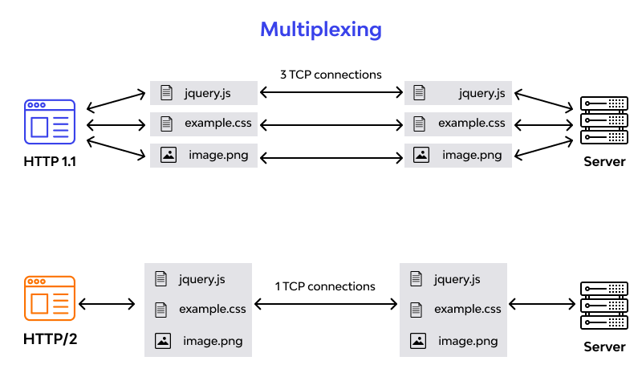
HTTP/2 减少网络延迟，提高浏览器的页面加载速度：
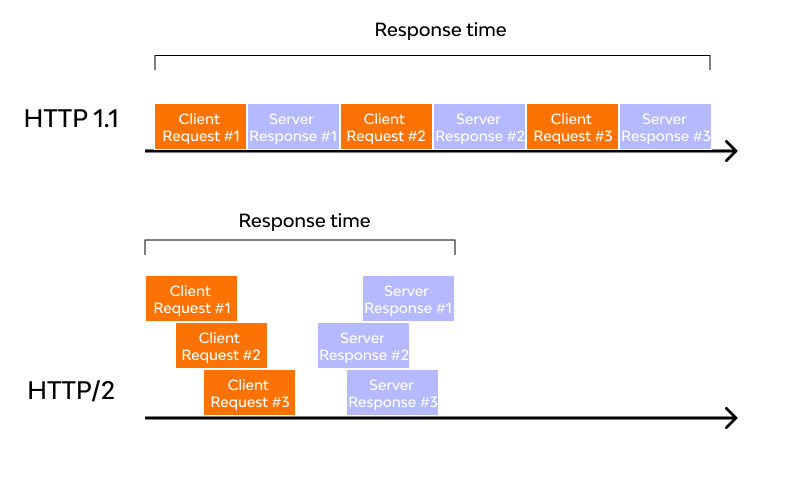
HTTP/2 使用二进制格式来传输数据，而不是像 HTTP/1.1 一样使用文本格式。这提高了效率并降低了数据传输的延迟。
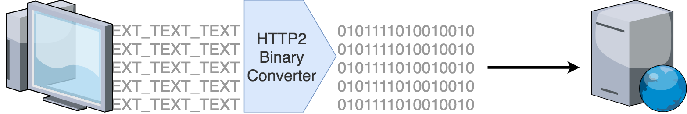
HTTP/2 使用头部压缩来减少传输数据的大小。这有助于减少网络带宽的使用量，并提高页面加载速度。
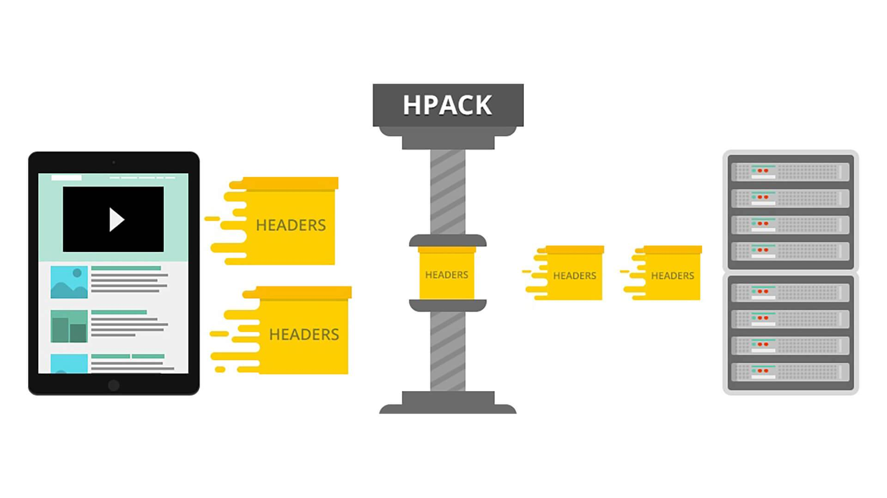
HTTP/2 允许服务器在不被请求的情况下主动向客户端发送数据。这有助于减少请求延迟，并提高页面加载速度。
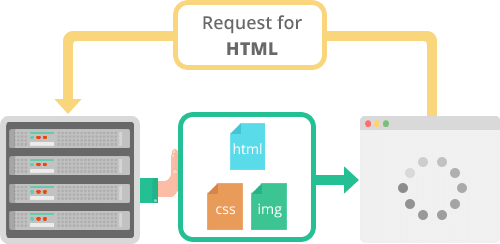
我们知道使用 SSL（安全套接层）证书对于网站和在线服务来说非常重要，SSL 证书通过加密用户和服务器之间的通信，保护数据不被窃听或篡改。
本章节我们将介绍使用 Certbot 工具申请免费的 SSL 证书。
Certbot 是一个开源的自动化工具，用于获取和续订由 Let's Encrypt 提供的免费 SSL/TLS 证书。
Let's Encrypt 是一个由互联网安全研究小组（ISRG）运营的证书颁发机构（CA），它提供了一个自动化的流程来生成和更新证书，使得网站管理员可以轻松地为他们的站点启用 HTTPS 加密。
Certbot 的主要特点包括：
Let's Encrypt 颁发的证书有效期为 90 天，Certbot 会自动配置证书的续期任务，确保证书不会过期。
使用 APT 安装：
sudo apt update sudo apt install certbot
安装完成后，Certbot 就可以用了。
安装 Snap 版本：
Snap 是 Certbot 官方推荐的安装方式，尤其是针对长期支持的 Ubuntu 版本。
sudo snap install core sudo snap refresh core sudo snap install --classic certbot sudo ln -s /snap/bin/certbot /usr/bin/certbot # 这一步是为了确保 certbot 命令能全局使用
安装 EPEL 仓库（适用于 CentOS 7 及以下）：
sudo yum install epel-release
sudo yum install certbot
macOS 上可以使用 Homebrew 安装 Certbot：
brew install certbot
更多内容我们可以在 Certbot 网站 https://certbot.eff.org/ 查看各个系统平台的安装方法：
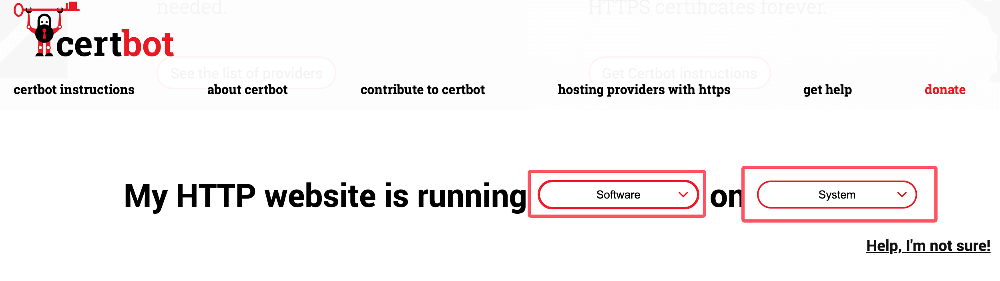
安装完成后，使用以下命令查看 certbot 安装的版本：
certbot --version
安装好certbot 后就可以使用以下命令来申请证书了，注意 *.runoob.com 为你自己的域名，需要修改：
certbot certonly -d *.runoob.com --manual --preferred-challenges dns --server https://acme-v02.api.letsencrypt.org/directory
执行以上命令后，填写信息：
Saving debug log to /var/log/letsencrypt/letsencrypt.log Enter email address (used for urgent renewal and security notices) (Enter 'c' to cancel): xxx@qq.com. # 这里输入你的邮箱 - - - - - - - - - - - - - - - - - - - - - - - - - - - - - - - - - - - - - - - - Please read the Terms of Service at https://letsencrypt.org/documents/LE-SA-v1.4-April-3-2024.pdf. You must agree in order to register with the ACME server. Do you agree? - - - - - - - - - - - - - - - - - - - - - - - - - - - - - - - - - - - - - - - - (Y)es/(N)o: Y # 输入 Y - - - - - - - - - - - - - - - - - - - - - - - - - - - - - - - - - - - - - - - - Would you be willing, once your first certificate is successfully issued, to share your email address with the Electronic Frontier Foundation, a founding partner of the Let's Encrypt project and the non-profit organization that develops Certbot? We'd like to send you email about our work encrypting the web, EFF news, campaigns, and ways to support digital freedom. - - - - - - - - - - - - - - - - - - - - - - - - - - - - - - - - - - - - - - - - (Y)es/(N)o: Y # 输入 Y Account registered. Requesting a certificate for *.runoob.com - - - - - - - - - - - - - - - - - - - - - - - - - - - - - - - - - - - - - - - - Please deploy a DNS TXT record under the name: xxxxxxx.runoob.com. # 这里需要设置域名解析，需要到域名后台填写信息，参考下图 with the following value: aIwqY00CZtziVwr-xxxxxxxxxxxxxx # 这里是域名解析的内容，参考下图 Before continuing, verify the TXT record has been deployed. Depending on the DNS provider, this may take some time, from a few seconds to multiple minutes. You can check if it has finished deploying with aid of online tools, such as the Google Admin Toolbox: https://toolbox.googleapps.com/apps/dig/#TXT/_acme-challenge.runoob.com. Look for one or more bolded line(s) below the line ';ANSWER'. It should show the value(s) you've just added. - - - - - - - - - - - - - - - - - - - - - - - - - - - - - - - - - - - - - - - - Press Enter to Continue # 参考下图设置完域名解析后，按回车就可以生成了，记住一定要先解析设置完成后再回车，然后生成的证书信息如下： Successfully received certificate. Certificate is saved at: /etc/letsencrypt/live/runoob.com/fullchain.pem Key is saved at: /etc/letsencrypt/live/runoob.com/privkey.pem This certificate expires on 2024-12-21. These files will be updated when the certificate renews. NEXT STEPS: - This certificate will not be renewed automatically. Autorenewal of --manual certificates requires the use of an authentication hook script (--manual-auth-hook) but one was not provided. To renew this certificate, repeat this same certbot command before the certificate's expiry date. - - - - - - - - - - - - - - - - - - - - - - - - - - - - - - - - - - - - - - - - If you like Certbot, please consider supporting our work by: * Donating to ISRG / Let's Encrypt: https://letsencrypt.org/donate * Donating to EFF: https://eff.org/donate-le - - - - - - - - - - - - - - - - - - - - - - - - - - - - - - - - - - - - - - - -
设置域名解析用于验证证书：
Let's Encrypt 颁发的证书有效期为 90 天，可以使用以下命令进行续签证书:
certbot certonly --force-renewal --manual -d '*.runoob.com' \ --preferred-challenges dns \ --server https://acme-v02.api.letsencrypt.org/directory
执行以上续签命令后，就会让我们更新下 DNS 解析记录：
Saving debug log to /var/log/letsencrypt/letsencrypt.log Requesting a certificate for *.jysahre.com - - - - - - - - - - - - - - - - - - - - - - - - - - - - - - - - - - - - - - - - Please deploy a DNS TXT record under the name: _acme-challenge.jysahre.com. with the following value: ckxo1wGXbP1CtNQ3ZRfvHxxxxxx # 这里会显示你要更改的 DNS 解析记录值，设置好就可以完成更新了 Before continuing, verify the TXT record has been deployed. Depending on the DNS provider, this may take some time, from a few seconds to multiple minutes. You can check if it has finished deploying with aid of online tools, such as the Google Admin Toolbox: https://toolbox.googleapps.com/apps/dig/#TXT/_acme-challenge.jysahre.com. Look for one or more bolded line(s) below the line ';ANSWER'. It should show the value(s) you've just added. - - - - - - - - - - - - - - - - - - - - - - - - - - - - - - - - - - - - - - - -